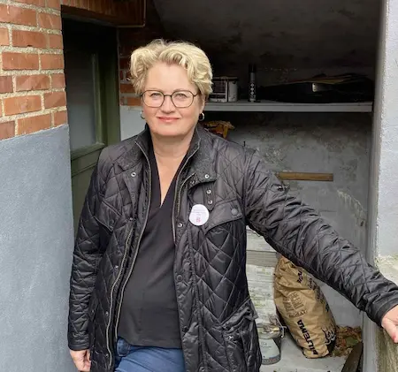

Mærkessager
STYRKET lokalt beredskab
Forsyningssikkerheden er ikke, hvad den har været. El, vand og internet kan pludseligt forsvinde. Vi skal have en klar plan for, at hvad du og jeg skal gøre hvis det sker.
GRØNNE LØSNINGER i Ballerup
Der er altid en grønnere løsning - Jeg vil finde den, som kan gennemføres hurtigst muligt.
STYR på sundhedsreformen
De nye sundhedsråd: Leverer de det til patienterne, som de skal?
NYE NABOER - stærkere fællesskaber
Mængder af nyt boligbyggeri i Ballerup betyder mange nye naboer. Vi skal sørge for, at de bliveren del af føllesskabet.
Lyt til min bog: "Tragedien i min familie"
Mofibo LinkOm Mig
Opvokset i Skovlunde og bor i Ballerup. 58 år, gift med Thomas, har tre voksne børn, fire høns og en hund. 20 års erfaring fra offentlige organisationer.
Arbejder med bæredygtig omstilling i Region Sjælland. Tidligere projektleder på et erhvervsråd og sekretariatsleder i Dansk Iværksætteforening.
BALLERUP har brug for mere end forvaltning. Vi har brug for mod og visioner.
Jeg kæmper for et Ballerup med stærke fællesskaber, der sætter mennesker og natur først - og som ikke er bange for at tænke nyt.
